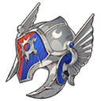
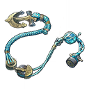
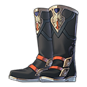

추천 광추
섬뜩한 밤
에너지 회복효율 · 추가 치유 · 공격력
효과 자세히
1중첩 → 에너지 회복효율 +12%. 아군 필살기 → HP 비율 최저 아군 치유. 곽향에게 치유받은 아군 공격력 최대 +12%(2턴).
수술 후의 대화
필살기 회전 · 양명 갱신
효과 자세히
에너지 회복효율 +8%(1중첩)~16%(5중첩).
같은 심정
전투 스킬로 팀 에너지 지원
효과 자세히
5중첩 → 치유량 +20%, 전투 스킬 사용 시 모든 아군 에너지 +4pt.
등가교환
턴 시작 시 아군 에너지 지원
효과 자세히
5중첩 → 곽향 턴 시작 시 에너지 50% 미만인 다른 아군 중 무작위 1명 에너지 +16pt.
내일의 내일이 올 때까지
치유량 · 아군 피해
효과 자세히
5중첩 → 곽향 치유량 +24%, 현재 HP 50% 이상인 아군의 피해 +20%.
추천 유물
태양과 번개의 여전사 4 · 부러진 용골 2
- 머리

주옵션HP부옵션속도 · 효과 저항 30%까지 · HP% · 방어력% - 손
 주옵션공격력부옵션속도 · 효과 저항 30%까지 · HP% · 방어력%
주옵션공격력부옵션속도 · 효과 저항 30%까지 · HP% · 방어력% - 몸통
 주옵션치유량 보너스부옵션속도 · 효과 저항 30%까지 · HP% · 방어력%
주옵션치유량 보너스부옵션속도 · 효과 저항 30%까지 · HP% · 방어력% - 다리
 주옵션속도부옵션효과 저항 30%까지 · HP% · 방어력%
주옵션속도부옵션효과 저항 30%까지 · HP% · 방어력% - 구체
 주옵션HP%부옵션속도 · 효과 저항 30%까지 · 방어력%
주옵션HP%부옵션속도 · 효과 저항 30%까지 · 방어력% - 매듭

주옵션에너지 회복효율부옵션속도 · 효과 저항 30%까지 · HP% · 방어력%
이 조합을 추천하는 이유
여전사 4세트 → 다른 아군 치유 시 곽향 속도·팀 치명타 피해 증가. 용골 → 효과 저항 30% 이상이면 팀 치명타 피해 증가.
가상공간을 누비는 메신저 2 + 흔적을 남기지 않은 과객 2 · 불로인의 선주 2
- 머리
 주옵션HP부옵션속도 · HP% · 효과 저항 · 방어력%
주옵션HP부옵션속도 · HP% · 효과 저항 · 방어력% - 손
 주옵션공격력부옵션속도 · HP% · 효과 저항 · 방어력%
주옵션공격력부옵션속도 · HP% · 효과 저항 · 방어력% - 몸통
 주옵션치유량 보너스부옵션속도 · HP% · 효과 저항 · 방어력%
주옵션치유량 보너스부옵션속도 · HP% · 효과 저항 · 방어력% - 다리

주옵션속도부옵션HP% · 효과 저항 · 방어력% - 구체
 주옵션HP%부옵션속도 · 효과 저항 · 방어력%
주옵션HP%부옵션속도 · 효과 저항 · 방어력% - 매듭
 주옵션에너지 회복효율부옵션속도 · HP% · 효과 저항 · 방어력%
주옵션에너지 회복효율부옵션속도 · HP% · 효과 저항 · 방어력%
이 조합을 추천하는 이유
메신저·과객 각 2세트 → 속도·치유량 증가. 선주 → 곽향 HP 증가, 속도 120 이상이면 팀 공격력 +8%.
이 정도면 잘 키웠다
동일 파티·광추 기준 · 조건 [*]
| 스탯 | 추천 스탯 | 준종결 | 종결 |
|---|---|---|---|
| 속도 [*] 범용 전투 속도 목표. E1 양명 중 각 아군 기초 속도의 12% 추가(곽향 +11.76). 강화 곽향은 전투 시작부터 양명. | 전투 134+ | 전투 143+ | 전투 160 초과 |
| HP [*] 최대 HP 비례 치유. 치유량 갑옷 착용 기준. 5,600~6,400은 권장 범위, 6,000은 편집상 목표. | 마을 5,600 전후 | 마을 6,000 전후 | 마을 6,400+ |
| 에너지 회복효율 [*] 회복효율 매듭 +15 기준. 필살기 주기는 광추·장신구·치유 발동 횟수·피격에 따라 변동. | 119.4%+ | 119.4%+ | 119.4%+ 유지 |
| 효과 저항 [*] 용골 착용 시 전투 효과 저항 30% 이상(세트 자체 10% 포함) → 팀 치명타 피해 증가. 제어류 디버프 저항 35%는 별도. | 용골 사용 시 30%+ | 용골 사용 시 30%+ | 용골 사용 시 30%+ 유지 |
육성 단계의 기준
4.2 강화, 캐릭터·광추 Lv.80, 유물 +15. 편집상 목표. 속도는 전투, HP·회복효율은 마을 기준.
성혼과 추천 돌파
E0 치유·해제·필살기 지원. 양명 유지·팀 속도는 E1 우선. 보유 4성 광추로 시작 가능.
1양명 +1턴 · 팀 속도 +12%추천
양명 중 곽향 치유량 +20%. 양명 갱신에 드는 스킬 포인트 절약.
2양명 중 아군 전투 불능 방지
치명 피해 → 최대 HP 50% 회복, 양명 −1턴. 전투당 최대 2회.
3필살기·특성 레벨 +2
레벨 상한 각각 15.
4대상 HP가 낮을수록 치유량 증가
전투 스킬·특성 치유량 최대 +80%.
5전투 스킬 +2 · 일반 공격 +1
레벨 상한 각각 15·10.
6치유받은 아군 피해 +50%
곽향에게 치유받은 아군에게 2턴 적용.
추천 파티


기본 운영과 행적
전투 역할
선주 「나부」 시왕사 견습 판관 · 5성 바람·풍요. 전투 스킬 → 대상 디버프 해제·대상과 인접 아군 치유. 필살기 → 자신을 제외한 동료 에너지 회복·공격력 증가.
- 강화 후 전투 스킬·필살기 → 양명 갱신. 양명 유지 중 아군 턴 시작·필살기 사용 → 특성 치유.
- 양명 유지 중 치유·해제 불필요 → 일반 공격으로 포인트 수급
광추와 유물
- 광추 「섬뜩한 밤」 / 에너지 회복효율용 4성 「수술 후의 대화」
- 치명타 피해 파티 → 「태양과 번개의 여전사」 4세트. 속도·치유 → 「가상공간을 누비는 메신저」·「흔적을 남기지 않은 과객」 각 2세트.
- 지속 피해 파티 → 「불로인의 선주」 2세트. 장착자 속도 120 이상 → 아군 공격력 증가.
- 몸통 치유량 보너스 / 신발 속도 / 차원 구체 HP% / 연결 매듭 에너지 회복효율
행적과 부옵션
필살기 → 전투 스킬·특성. 부옵션 속도·HP% → 생존이 필요하면 방어력%·효과 저항.
아하 속도 계산기 →기준과 출처 · 2026-11-25
4.2 정련된 새 빛 강화 · Prydwen 4.2 빌드 분석